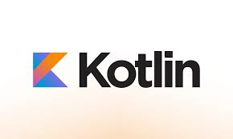
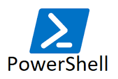

Las herramientas de programación son programas informáticos y aplicaciones que los desarrolladores usan para crear, probar, depurar y mantener otros programas.
|
|
|
|
|---|---|---|---|
| Es la versión más reciente y actual de HTML (HyperText Markup Language) | Permite aplicar estilos y dar una presentación visual a documentos web escritos en HTML | Lenguaje de programación esencial para la web | Lenguaje de programación de tipado estático que es un "superconjunto" de JavaScript |
| HTML5 | CSS3 | Javascript | Typescript |
 |
 |
 |  |
|---|---|---|---|
| Lenguaje de programación orientado a objetos | Lenguaje de programación de propósito general, de alto nivel | Lenguaje de programación moderno, de código abierto y de tipado estático | Combina un shell de línea de comandos y un lenguaje de scripting para la automatización de tareas |
| Java | Python | Kotlin | PowerShell |